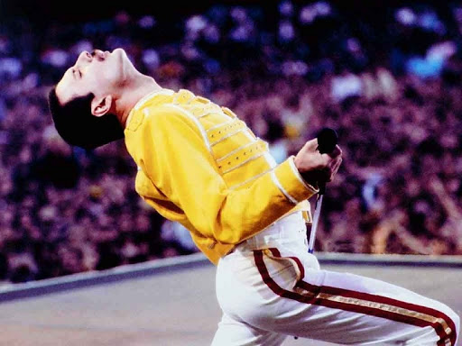

Wembley 1986
En 1986 la banda se encontraba en la cima del mundo, y
durante uno de los mejores conciertos que ofrecieron en su
trayectoria, Freddie mostró a su audiencia las maravillas que
podía realizar su voz aún sin decir una palabra concreta. Miles
de espectadores al unísono corearon la improvisación del
cantante con entusiasmo, mientras él, cual director de orquesta,
daba indicaciones a las masas.